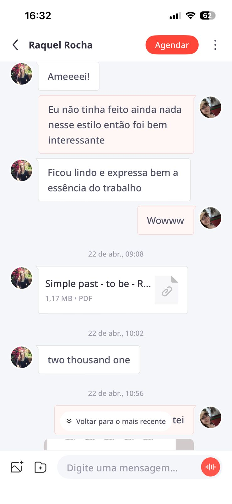
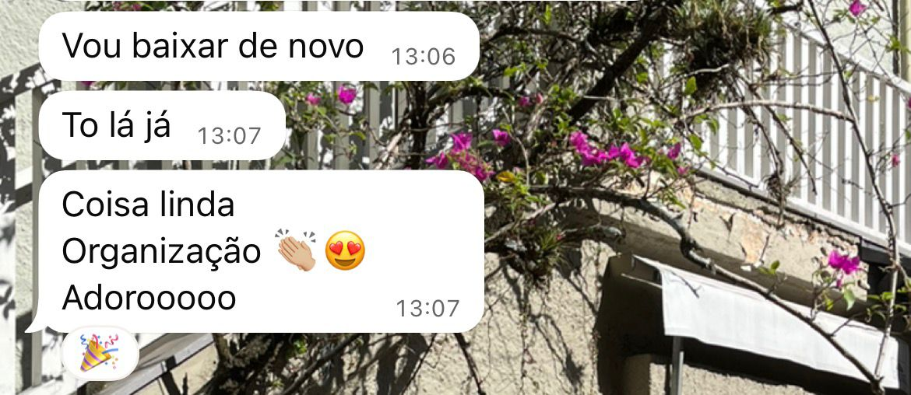
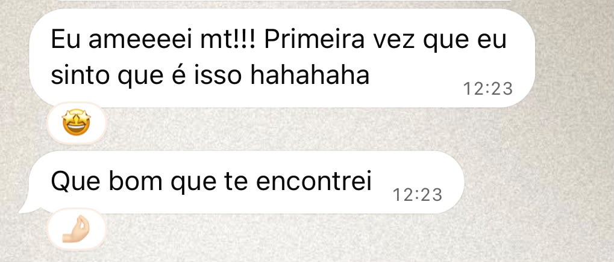
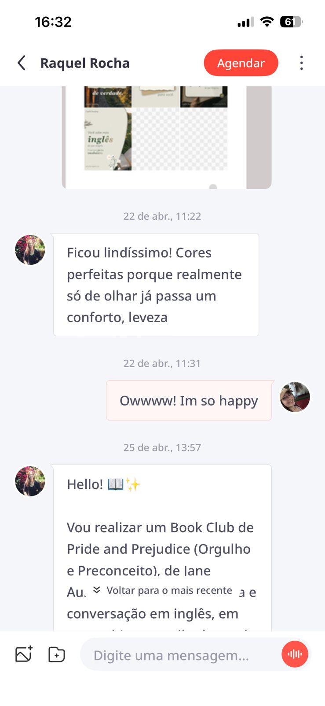
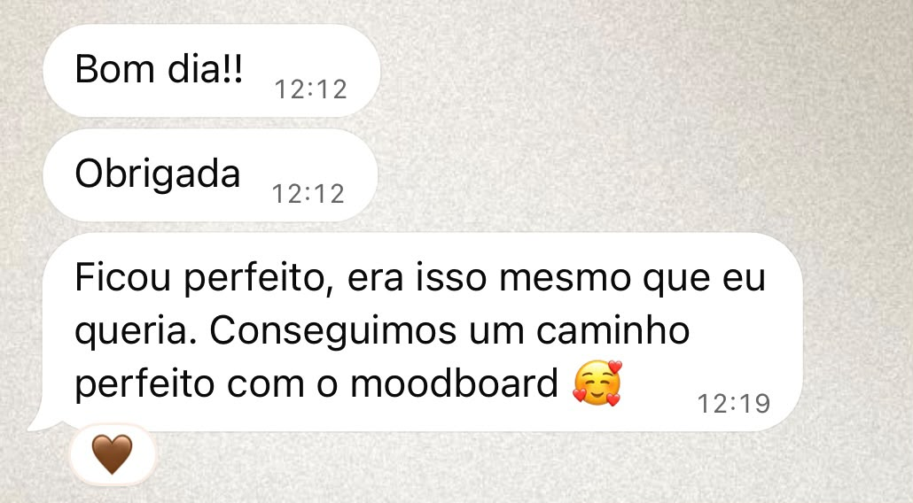
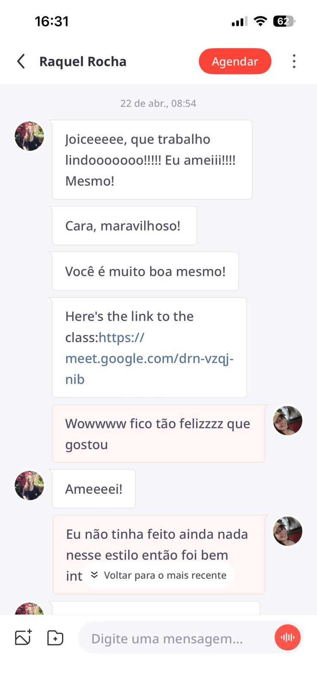
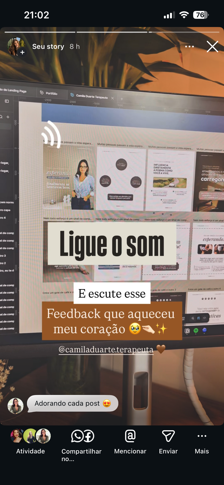
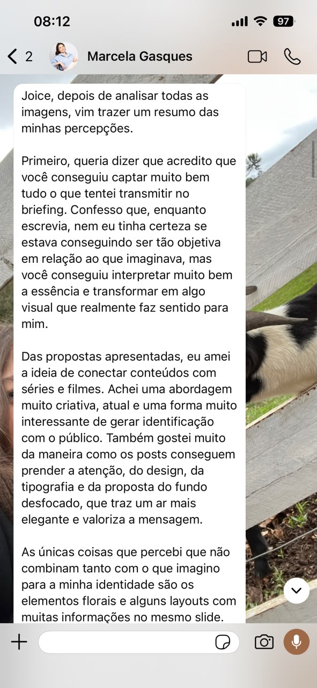
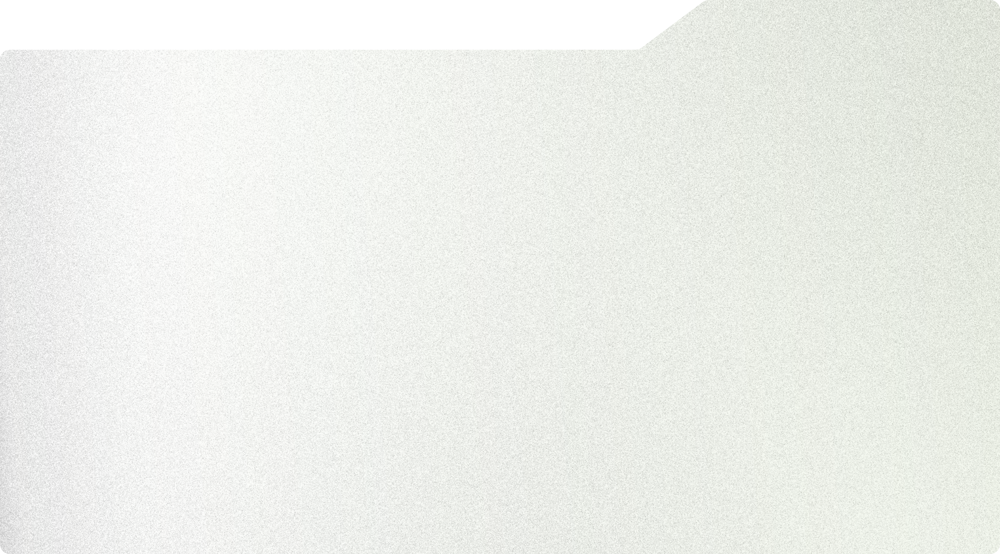
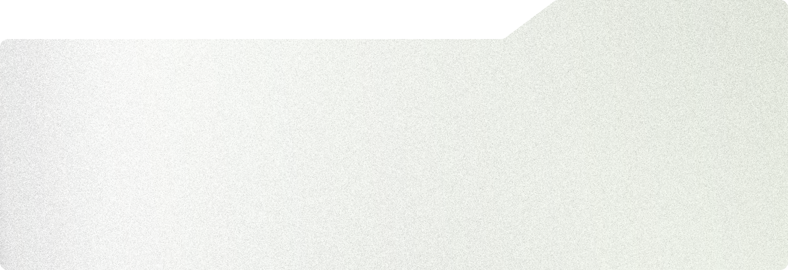

Seu trabalho
bem explicado
Quando alguém conhece seu negócio pela internet, precisa entender o que você faz, para quem trabalha e como pode contratar você.
Organizo a comunicação do seu negócio com sites, landing pages e posts para redes sociais que apresentam seus serviços com clareza, coerência visual e profissionalismo.
Solicitar orçamentoQuando alguém conhece seu negócio pela internet, precisa entender o que você faz, para quem trabalha e como pode contratar você.
Informações espalhadas, posts sem unidade visual e um site desatualizado dificultam essa compreensão e podem enfraquecer a confiança de quem ainda não conhece seu trabalho.
Sua comunicação precisa facilitar a decisão do cliente, não criar mais dúvidas.








Toque em um depoimento para ampliar.
Entenda como funciona
Conheça projetos desenvolvidos para apresentar serviços, organizar informações e fortalecer a comunicação visual de cada negócio.
Para empresas e profissionais que precisam apresentar seus serviços, organizar informações e construir uma presença digital própria.
Para apresentar uma oferta, divulgar um serviço ou direcionar o público para uma ação específica.
Para manter uma comunicação visual mais consistente e apresentar seus conteúdos com organização e profissionalismo.
Você acompanha cada etapa do projeto, com clareza sobre o que será feito, os prazos e os momentos de aprovação.
Conversamos sobre seu negócio, suas necessidades e o que você deseja alcançar.
Alinhamos a direção do projeto, os conteúdos necessários, as entregas e os prazos.
Organizo os conteúdos e desenvolvo o projeto conforme os objetivos e a identidade da sua marca.
Você avalia a proposta e fazemos os ajustes combinados antes da finalização.
Você recebe o projeto finalizado nos formatos e nas condições definidos no planejamento.

Sobre a profissional
Sou Joice Zanatta, designer com formação em Relações Públicas. Uno estratégia de comunicação, conteúdo e design para ajudar negócios a apresentar seu valor, transmitir confiança e facilitar a contratação dos seus serviços.
Meu trabalho considera quem você quer alcançar, o que diferencia sua marca e o que seu público precisa saber para escolher você. Isso orienta a organização das informações, a linguagem e as escolhas visuais de cada projeto.
O objetivo é que sua presença digital comunique o valor do seu trabalho e dê ao cliente segurança para escolher você.
Não precisa. Na conversa inicial, vamos entender seu negócio e o que você precisa comunicar para definir uma solução adequada ao seu objetivo.
Um site apresenta o negócio de forma mais ampla, organizando seus serviços e informações. Uma landing page concentra a comunicação em uma oferta ou ação específica, como solicitar um orçamento.
Sim. Cada projeto é criado conforme as necessidades e os objetivos do seu negócio. Busco entender o estilo, as preferências visuais e o tom de voz da sua marca para desenvolver uma comunicação que represente sua identidade e converse com seu público.
Se você ainda não tem os textos, a criação pode ser incluída no projeto. No planejamento, avaliamos quais conteúdos serão necessários de acordo com seus objetivos.
O valor depende do escopo, dos conteúdos e das funcionalidades necessárias. Entre em contato pelo WhatsApp para conversar sobre o projeto e solicitar uma proposta.
O prazo é definido na proposta, de acordo com o escopo do projeto. A organização dos conteúdos e as etapas de revisão e aprovação também são alinhadas antes do início.
Não. Eu crio os conteúdos e entrego os arquivos finalizados em PNG ou JPG, prontos para você publicar. Não realizo publicação nem gerenciamento de redes sociais.
